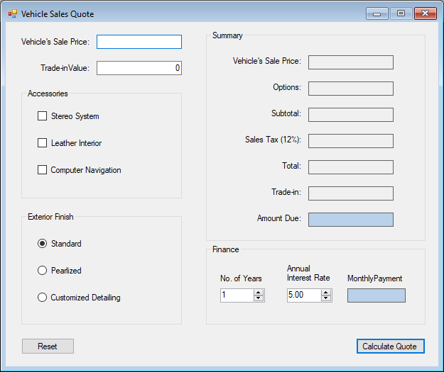
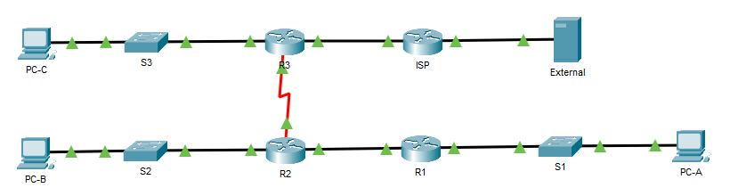
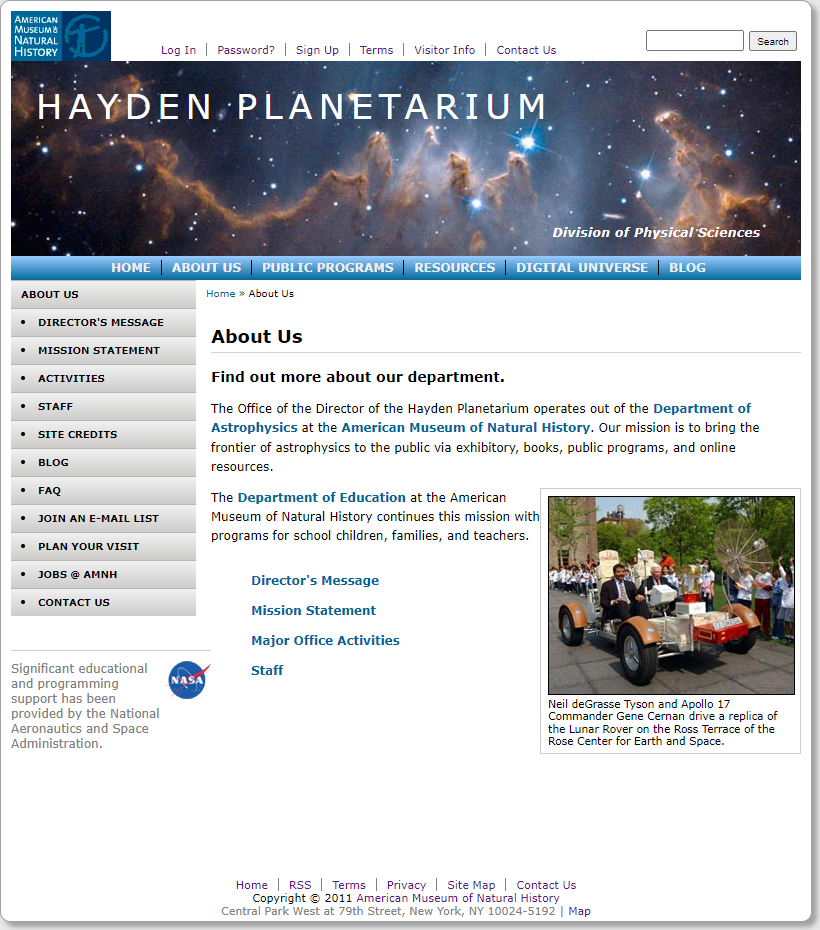
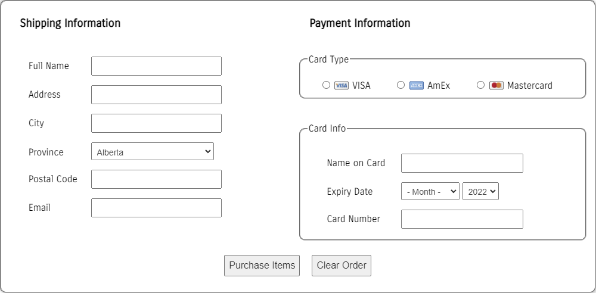

EPortfolio
- Programming 2: Assignment 5 - Windows Form Applications
This application is meant to simulate the sale of a vehicle. We were tasked with developing the Windows form to the design, as well as ensuring all functionality requirements were met. This was the first programming assignment that had us working with a GUI, which helped it feel a lot more grounded and practical.

- Network Computing 1: Final Project (Topology)
Our network computing final project had us further building upon a topology that we had slowly been expanding throughout the term. By the time we reached this final project, the topology had so much to it and we had configured all of it. This includes: Creating our own addressing scheme, subnetting the LANs, troubleshooting using ping/traceroute, IPv4 Addressing, IPv6 Addressing, and basic security measures.

- Web Development 1: Project 1 - Develop from Design
The first of three web development projects was all about developing a website from a design that was provided for us. I really enjoyed this assignment because it had us following an industry standard with how we received the design of the webpage from a designer and then subsequently developing the website from scratch to match the design.

- Web Development 1: Project 2 - Form Validation
Web Development Project 2 tested our proficiency with JavaScript by having us validate a form containing shipping and payment information. The webpage itself was a simulated shopping cart for computer parts. Just like with the Programming Assignment and WebDev Project 1 above, the realism and application of our learnings in an environment that felt both relatable and relevant caused me to really enjoy working on this project.
